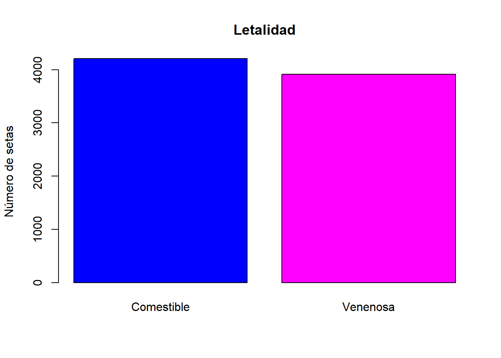

4 Preprocesado de datos.
Para poder tranformar las variables en factor, lo haremos mediante as.factor() a todas las variables de los datos.
Ahora podemos ver mejor como son nuestros datos.
summary(datos.setas)## Letalidad Forma_S Cuticula Color_S Escamas Olor Fijacion_L
## e:4208 b: 452 f:2320 n :2284 f:4748 n :3528 a: 210
## p:3916 c: 4 g: 4 g :1840 t:3376 f :2160 f:7914
## f:3152 s:2556 e :1500 s : 576
## k: 828 y:3244 y :1072 y : 576
## s: 32 w :1040 a : 400
## x:3656 b : 168 l : 400
## (Other): 220 (Other): 484
## Espacio_L Tamaño_L Color_L Forma_T Tallo_raiz Superficie_T1
## c:6812 b:5612 b :1728 e:3516 ?:2480 f: 552
## w:1312 n:2512 p :1492 t:4608 b:3776 k:2372
## w :1202 c: 556 s:5176
## n :1048 e:1120 y: 24
## g : 752 r: 192
## h : 732
## (Other):1170
## Superficie_T2 Color_T1 Color_T2 Tipo_V Color_V N_anillos
## f: 600 w :4464 w :4384 p:8124 n: 96 n: 36
## k:2304 p :1872 p :1872 o: 96 o:7488
## s:4936 g : 576 g : 576 w:7924 t: 600
## y: 284 n : 448 n : 512 y: 8
## b : 432 b : 432
## o : 192 o : 192
## (Other): 140 (Other): 156
## Tipo_anillo Color_esporas Poblacion Habitat
## e:2776 w :2388 a: 384 d:3148
## f: 48 n :1968 c: 340 g:2148
## l:1296 k :1872 n: 400 l: 832
## n: 36 h :1632 s:1248 m: 292
## p:3968 r : 72 v:4040 p:1144
## b : 48 y:1712 u: 368
## (Other): 144 w: 1924.1 EDA. Exploratory Data Analysis.
attach(datos.setas)4.1.1 Letalidad:
La variable letalidad tiene dos niveles distintos, venenosa (p) o comestible (e), la frecuencia relativa correspondiente a nuestros datos es:
#Tabla:
table(datos.setas$Letalidad)##
## e p
## 4208 3916#Tabla de frecuencias:
prop.table(table(datos.setas$Letalidad))##
## e p
## 0.5179714 0.4820286#Gráfico
barplot(table(datos.setas$Letalidad),main="Letalidad",ylab="Número de setas",col=c("blue","magenta"),names.arg=c("Comestible","Venenosa"))
Podríamos transformar esta variable para que fuera interpretada como binaria numérica (0-comestible, 1-venenosa)
Una de las variables, Tipo_v tipo de volva, con dos niveles distintos, parcial (p) y universal (u), podríamos eliminarla de nuestros datos pues todo la frecuencia solo está en uno de los niveles, luego no aporta información alguna para determinar si es venenosa o comestible.
4.2 Correlación entre las variables.
Vamos a comprobar si existe alguna correlación entre las distintas variables.
#Tabla de frecuencias letalidad~habitat
table(datos.setas$Letalidad,datos.setas$Habitat)##
## d g l m p u w
## e 1880 1408 240 256 136 96 192
## p 1268 740 592 36 1008 272 0#Gráfico letalidad~habitat
barplot(table(datos.setas$Letalidad,datos.setas$Habitat),main="Letalidad",ylab="Número de setas",names.arg=c("pastos", "hojas", "prados", "caminos", "urbano", "desechos", "bosques"),col=c("blue","magenta"))
legend(x = "topright", legend = c("Comestible","Venenosa"), fill = c("blue", "magenta"))
#Tabla de frecuencias letalidad~poblacion
table(datos.setas$Letalidad,datos.setas$Poblacion)##
## a c n s v y
## e 384 288 400 880 1192 1064
## p 0 52 0 368 2848 648#Gráfico letalidad~habitat
barplot(table(datos.setas$Letalidad,datos.setas$Poblacion),main="Letalidad",ylab="Número de setas",names.arg=c("abundante", "agrupada", "numerosa", "dispersa", "varias", "solitaria"),col=c("blue","magenta"))
legend(x = "topright", legend = c("Comestible","Venenosa"), fill = c("blue", "magenta"))